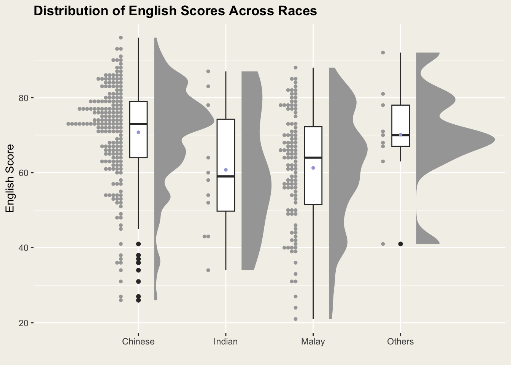

pacman::p_load(ggdist, ggridges, ggthemes,
colorspace, tidyverse, patchwork)Hands-on Exercise 04.a
ggplot2
ggridges
ggdist
Visualising Distribution
1 Learning Outcome
In previous hand-on exercises, we have draw some popular statistical graphs, like histogram, boxplot, scatter plot and etc. In this hands-on exercise, we are going to learn new statistical graphic methods for visualising distribution, namely ridgeline plot and raincloud plot by using ggplot2 and its extensions.
2 Getting Started
Use the pacman package p_load() to check, install and launch the following R packages:
| Library | Description |
|---|---|
| ggridges | a ggplot2 extension specially designed for plotting ridgeline plots |
| ggdist | a ggplot2 extension spacially desgin for visualising distribution and uncertainty |
| tidyverse | a family of R packages for data processing |
| ggthemes | a ggplot extension for ggplots, providing additional themes, scales, and geoms |
| colorspace | a R package provides a broad toolbox for selecting individual colors or color palettes, manipulating and employing these colors in various kinds of visualisations. |
In this exercise, Exam_data.csv will be used. We use read_csv() of readr to import the data:
exam <- read_csv("data/Exam_data.csv")After importing the data, let’s examine it to understand its data structure:
The dataset contains 7 attributes and 322 observations with no missing values.
The categorical attributes are: ID, CLASS, GENDER and RACE.
The continuous attributes are: MATHS, ENGLISH and SCIENCE.
head(exam)# A tibble: 6 × 7
ID CLASS GENDER RACE ENGLISH MATHS SCIENCE
<chr> <chr> <chr> <chr> <dbl> <dbl> <dbl>
1 Student321 3I Male Malay 21 9 15
2 Student305 3I Female Malay 24 22 16
3 Student289 3H Male Chinese 26 16 16
4 Student227 3F Male Chinese 27 77 31
5 Student318 3I Male Malay 27 11 25
6 Student306 3I Female Malay 31 16 16str(exam)spc_tbl_ [322 × 7] (S3: spec_tbl_df/tbl_df/tbl/data.frame)
$ ID : chr [1:322] "Student321" "Student305" "Student289" "Student227" ...
$ CLASS : chr [1:322] "3I" "3I" "3H" "3F" ...
$ GENDER : chr [1:322] "Male" "Female" "Male" "Male" ...
$ RACE : chr [1:322] "Malay" "Malay" "Chinese" "Chinese" ...
$ ENGLISH: num [1:322] 21 24 26 27 27 31 31 31 33 34 ...
$ MATHS : num [1:322] 9 22 16 77 11 16 21 18 19 49 ...
$ SCIENCE: num [1:322] 15 16 16 31 25 16 25 27 15 37 ...
- attr(*, "spec")=
.. cols(
.. ID = col_character(),
.. CLASS = col_character(),
.. GENDER = col_character(),
.. RACE = col_character(),
.. ENGLISH = col_double(),
.. MATHS = col_double(),
.. SCIENCE = col_double()
.. )
- attr(*, "problems")=<externalptr> summary(exam) ID CLASS GENDER RACE
Length:322 Length:322 Length:322 Length:322
Class :character Class :character Class :character Class :character
Mode :character Mode :character Mode :character Mode :character
ENGLISH MATHS SCIENCE
Min. :21.00 Min. : 9.00 Min. :15.00
1st Qu.:59.00 1st Qu.:58.00 1st Qu.:49.25
Median :70.00 Median :74.00 Median :65.00
Mean :67.18 Mean :69.33 Mean :61.16
3rd Qu.:78.00 3rd Qu.:85.00 3rd Qu.:74.75
Max. :96.00 Max. :99.00 Max. :96.00 any(is.na(exam))[1] FALSEIn R, factors are used to handle categorical data and ordered variable. As there are categorical attributes in our dataset, we are going to convert their data type from <chr> to <fctr>:
col <- c("CLASS","GENDER","RACE")
exam <- exam %>% mutate(across(all_of(col), as.factor))After converting the attributes, let’s check the data again:
head(exam)# A tibble: 6 × 7
ID CLASS GENDER RACE ENGLISH MATHS SCIENCE
<chr> <fct> <fct> <fct> <dbl> <dbl> <dbl>
1 Student321 3I Male Malay 21 9 15
2 Student305 3I Female Malay 24 22 16
3 Student289 3H Male Chinese 26 16 16
4 Student227 3F Male Chinese 27 77 31
5 Student318 3I Male Malay 27 11 25
6 Student306 3I Female Malay 31 16 163 Visualising Distribution with Ridgeline Plot
A Ridgeline plot (sometimes called Joyplot) shows the distribution of a numeric value for several groups. Distribution can be represented using histograms or density plots, all aligned to the same horizontal scale and presented with a slight overlap.
What for?
Ridgeline plots make sense when the number of group to represent is
medium to high, and thus a classic window separation would take to much space. Indeed, the fact that groups overlap each other allows to use space more efficiently. If you have less than ~6 groups, dealing with other distribution plots is probably better.It works well when there is a clear pattern in the result, like if there is an obvious ranking in groups. Otherwise group will tend to overlap each other, leading to a messy plot not providing any insight.
3.1 Plotting ridgeline graph: ggridges method
ggridges package provides two main geom to plot gridgeline plots, they are: geom_ridgeline() and geom_density_ridges(). The former takes height values directly to draw the ridgelines, and the latter first estimates data densities and then draws those using ridgelines.
The ridgeline plot below is plotted by using geom_density_ridges():
Display Code
ggplot(exam, aes(x=ENGLISH, y=CLASS))+
geom_density_ridges(
scale = 2, # adjust the size (height) of the ridges
rel_min_height = 0.01, # control the min height of the ridges
bandwidth = 3, # control the smoothness of the density estimate
fill = lighten("#EBCF89", .6), # lighten the color
color = "#D18A7D") + # border color
scale_x_continuous(
name = "English Grades",
expand = c(0,0)) + #remove spaces before and after the data range
scale_y_discrete(
name = NULL,
expand = expansion(add = c(0.5,1)) # add more spaces before 3A and after 3I
)+
theme_ridges()+
theme(panel.background = element_rect(fill = "#f3f1e9"),
plot.background = element_rect(fill = "#f3f1e9",color = NA))
Insights
The density plot of English grades by class, reveals the clear differences in grade distributions: Classes 3A and 3B show similar grade ranges, also do classes 3C and 3D, and 3E~3G, while class 3F notably contains few outliers with lower grades around 25.
The ggridges package offers enhanced versions of geom_density_ridges2 and geom_ridgeline2. These versions improve compatibility with different data structures and eliminate the need to manually adjust ridge heights using parameters like scale or rel_min_height.
However, in the patchwork below, under the default setting, the only noticeabke difference is the border displayed under each class’s density plot:
Display Code
a <- ggplot(exam, aes(x = ENGLISH, y=CLASS))+
geom_density_ridges2()+
ggtitle("geom_density_ridges2")+
theme_ridges()+
theme(panel.background = element_rect(fill = "#f3f1e9"),
plot.background = element_rect(fill = "#f3f1e9",color = NA))
b <- ggplot(exam, aes(x = ENGLISH, y=CLASS))+
geom_density_ridges()+
ggtitle("geom_density_ridges")+
theme_ridges()+
theme(panel.background = element_rect(fill = "#f3f1e9"),
plot.background = element_rect(fill = "#f3f1e9",color = NA))
a+b3.2 Varying fill colors along the x axis
Sometimes we would like to have the area under a ridgeline not filled with a single solid color but rather with colors that vary in some form along the x axis. This effect can be achieved by using either geom_ridgeline_gradient() or geom_density_ridges_gradient(). Both geoms work just like geom_ridgeline() and geom_density_ridges(), except that they allow for varying fill colors. However, they do not allow for alpha transparency in the fill. For technical reasons, we can have changing fill colors or transparency but not both.
We use the argument scale_fill_viridis_c() to apply color scaling, where “c” represents continuous data. The palette is also available for binned data (scale_fill_viridis_b()) and discrete data (scale_fill_viridis_d()).
Below are the argument we used to adjust the scale_fill_viridis_c():
| Argument | Discription |
|---|---|
| name | The name of the scale. Used as the axis or legend title |
| alpha | The alpha transparency, a number in [0,1], see argument alpha in hsv. |
| direction | Sets the order of colors in the scale. If 1, the default, colors are ordered from darkest to lightest. If -1, the order of colors is reversed. |
| option | A character string indicating the color map option to use. Eight options are available:
|
Display Code
ggplot(exam, aes(x=ENGLISH, y=CLASS,
fill = stat(x)))+
geom_density_ridges_gradient(
scale = 3,
rel_min_height = 0.01)+
scale_fill_viridis_c(name = NULL,
option = "C",
alpha=1)+
scale_x_continuous(name = "English Grades", expand = c(0,0))+
scale_y_discrete(name=NULL)+
theme_ridges()+
labs(title = 'Gradient Colors for English Scores') +
theme(panel.background = element_rect(fill = "#f3f1e9"),
plot.background = element_rect(fill = "#f3f1e9",color = NA))3.3 Mapping the probabilities directly onto colour
Beside providing additional geom objects to support the need to plot ridgeline plot, ggridges package also provides a stat function called stat_density_ridges() that replaces stat_density() of ggplot2.
Figure below is plotted by mapping the probabilities calculated by using stat(ecdf) which represent the empirical cumulative density function for the distribution of English score.
Display Code
ggplot(exam, aes(x=ENGLISH, y=CLASS,
fill = 0.5 - abs(0.5-stat(ecdf))))+
stat_density_ridges(geom = "density_ridges_gradient",
calc_ecdf = TRUE)+
scale_fill_viridis_c(name = "Tail probability",
option = "F",
direction = -1)+
theme_ridges()+
labs(title = 'Distribution of English Scores Across Classes') +
theme(panel.background = element_rect(fill = "#f3f1e9"),
plot.background = element_rect(fill = "#f3f1e9",color = NA))3.4 Ridgeline plots with quantile lines
By using geom_density_ridges_gradient(), we can colour the ridgeline plot by quantile, via the calculated stat(quantile) aesthetic as shown in the figure below.
Display Code
ggplot(exam, aes(x=ENGLISH, y=CLASS,
fill = factor(stat(quantile))))+
stat_density_ridges(geom = "density_ridges_gradient",
calc_ecdf = TRUE,
quantiles = 4,
quantile_lines = TRUE)+
scale_fill_viridis_d(name = "Qunatile",
option = "D")+
theme_ridges()+
labs(title = 'Distribution of English Scores Across Classes') +
theme(panel.background = element_rect(fill = "#f3f1e9"),
plot.background = element_rect(fill = "#f3f1e9",color = NA))
Insights
By filling with quantile colors, we can now clearly compare grades across classes. While classes 3D and 3E have similar overall grade ranges and distributions in their top 50%, class 3D shows a higher proportion of students with lower grades in Quantile 1.
Instead of using number to define the quartiles, we can also specify quartiles by cut points such as 10% and 90% tails to colour the ridgeline plot as shown in the figure below:
Display Code
ggplot(exam, aes(x=ENGLISH, y=CLASS,
fill = factor(stat(quantile))))+
stat_density_ridges(geom = "density_ridges_gradient",
calc_ecdf = TRUE,
quantiles = c(0.025,0.975))+
scale_fill_manual(name = "Probability",
values = c())+
theme_ridges()+
labs(title = 'Quantile Distribution of English Grades') +
theme(panel.background = element_rect(fill = "#f3f1e9"),
plot.background = element_rect(fill = "#f3f1e9",color = NA))
Insights
If we only care about comparing the difference of top 10% and bottom 10% of students’ performance, setting the quantiles c(0.1,0.9) would make it easier for readers to understand the performance differences across classes.
4 Visualising Distribution with Raincloud Plot
Raincloud Plot is a data visualisation techniques that produces a half-density to a distribution plot. It gets the name because the density plot is in the shape of a “raincloud”. The raincloud (half-density) plot enhances the traditional box-plot by highlighting multiple modes. The boxplot does not show where densities are clustered, but the raincloud plot does.
4.1 Plotting a Half Eye graph
First, we will plot a Half-Eye graph by using stat_halfeye() of ggdist package.
This produces a Half Eye visualization, which is contains a half-density and a slab-interval.
We remove the slab interval by setting .width = 0 and point_colour = NA.
Display Code
ggplot(exam,
aes(x = RACE,y = ENGLISH)) +
stat_halfeye(adjust = 0.5,
justification = -0.2,
.width = 0,
point_colour = NA)+
labs(title ="Distribution of English Scores Across Races",
x = "", y="English Score")+
theme(panel.background = element_rect(fill = "#f3f1e9"),
plot.background = element_rect(fill = "#f3f1e9",color = NA),
plot.title = element_text(face = "bold"))4.2 Adding the boxplot with geom_boxplot()
Next, we will add the second geometry layer using geom_boxplot() of ggplot2. This produces a narrow boxplot. We reduce the width and adjust the opacity.
Display Code
ggplot(exam,
aes(x = RACE,y = ENGLISH)) +
stat_halfeye(adjust = 0.5,
justification = -0.2,
.width = 0,
point_colour = NA)+
geom_boxplot(width = 0.20,
outlier.shape = NA)+
labs(title ="Distribution of English Scores Across Races",
x = "", y="English Score")+
theme(panel.background = element_rect(fill = "#f3f1e9"),
plot.background = element_rect(fill = "#f3f1e9",color = NA),
plot.title = element_text(face = "bold"))4.3 Adding the Dot Plots with stat_dots()
Next, we will add the third geometry layer using stat_dots() of ggdist package. This produces a half-dotplot, which is similar to a histogram that indicates the number of samples (number of dots) in each bin. We select side = “left” to indicate we want it on the left-hand side.
Display Code
ggplot(exam,
aes(x = RACE,y = ENGLISH)) +
stat_halfeye(adjust = 0.5,
justification = -0.2,
.width = 0,
point_colour = NA)+
geom_boxplot(width = 0.20,
outlier.shape = NA)+
stat_dots(side = "left",
justification = 1.2,
binwidth = .5,
dotsize = 2
)+
labs(title ="Distribution of English Scores Across Races",
x = "", y="English Score")+
theme(panel.background = element_rect(fill = "#f3f1e9"),
plot.background = element_rect(fill = "#f3f1e9",color = NA),
plot.title = element_text(face = "bold"))
Insights
This graph contains a lot of information, including numbers of student and distribution, outliers, range and quartiles of English scores across races:
Numbers of student: Chinese > Malay >> Indian > Others
Median of English scores: Chinese > Others > Malay > Indian
IQR of English scores: Indian > Malay > Chinese > Others
Numbers of Outliers (lower scores): Chinese > Others > Malay = Indian
In conclusion, both Chinese students and those in the “Others” category perform well in English, with mean scores around 70. The Chinese group shows more extreme performance variation, with notable numbers of students having scores below 40. Meanwhile, the “Others” group shows a more normal distribution with few outliers, suggesting consistently strong English performance across the group.
4.4 Finishing the touching
Lastly, coord_flip() of ggplot2 package will be used to flip the raincloud chart horizontally to give it the raincloud appearance. Also, we add aes(fill = RACE) in stat_halfeye() function to highlight different races:
Display Code
ggplot(exam,
aes(x = RACE,y = ENGLISH)) +
stat_halfeye(aes(fill = RACE),
alpha = 0.5,
adjust = 0.5,
justification = -0.2,
.width = 0,
point_colour = NA)+
geom_boxplot(width = 0.20,
outlier.shape = NA)+
stat_dots(
side = "left",
justification = 1.2,
binwidth = NA,
dotsize = 2
)+
labs(title ="Distribution of English Scores Across Races",
x = "", y="English Score")+
coord_flip() +
theme(panel.background = element_rect(fill = "#f3f1e9"),
plot.background = element_rect(fill = "#f3f1e9",color = NA),
legend.position = 'none',
plot.title = element_text(face = "bold"))5 Reference
Kam, T.S. (2025). Visualising Distribution.